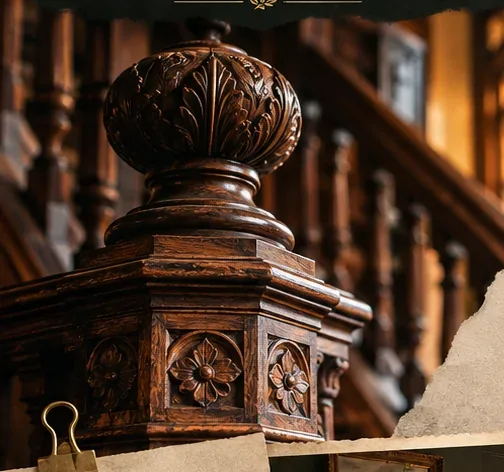
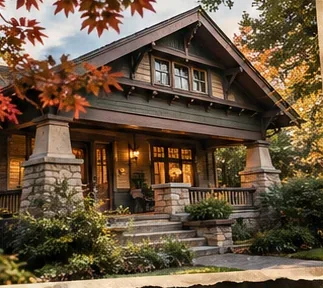

Observe
Study the original materials and structure.
Respect for the past, understanding of modern life, and the craft that brings the two together.
Read the restoration journal
Every old home carries a story. The work is to honor it and prepare it for the next chapter.

Woodwork, original fixtures, trim profiles, careful material selection, and the details that make an old home worth preserving.
Our approachAn archive-led design lets prospective clients understand philosophy before requesting a quote.
Study the original materials and structure.
Keep characteristic details when practical and safe.
Improve functionality with thoughtful interventions.
The website would invite a conversation about the building and goals.
Explore the sample inquiry process. This form never sends, saves, or schedules anything.